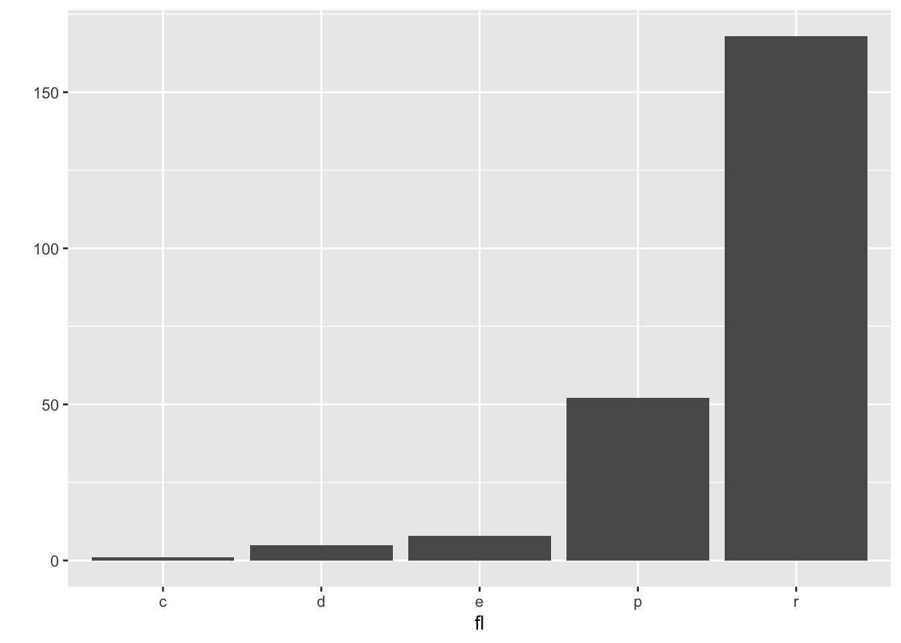
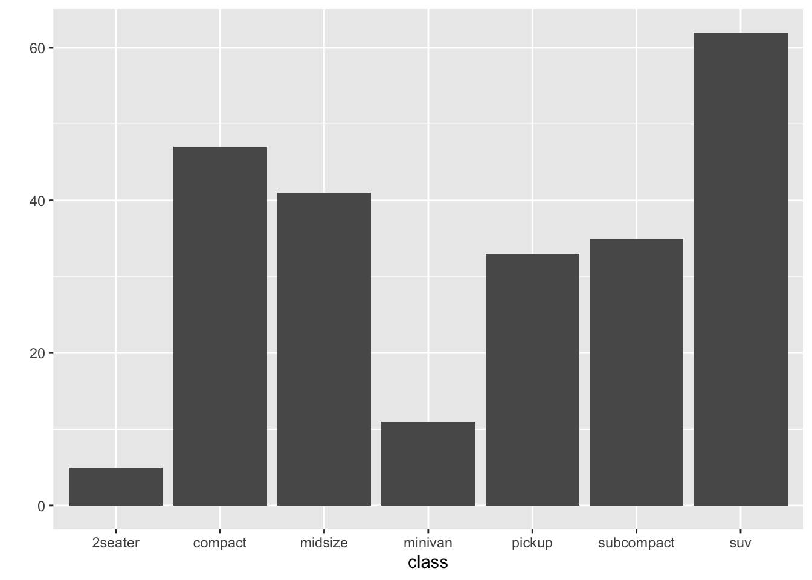
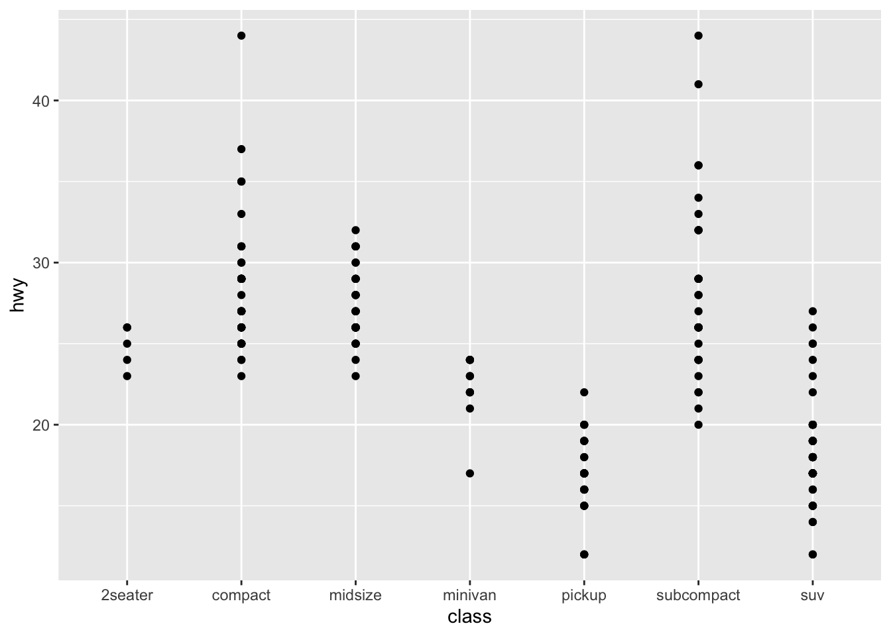

R Note
2021-07-08
Intro to R
R is one of the best language for statistics. Sometimes it is compared with python, but being able to handle R give a huge advantage for anyone who works with data and statistics.
| This Note is based on the bookdown package (Xie 2021) |
| # Data Visualization |
| ## qplot |
first, let’s import ggplot2 library
library(ggplot2)and we use mpg dataset. Extract top 5 rows
head(mpg)## # A tibble: 6 x 11
## manufacturer model displ year cyl trans drv cty hwy fl class
## <chr> <chr> <dbl> <int> <int> <chr> <chr> <int> <int> <chr> <chr>
## 1 audi a4 1.8 1999 4 auto(l5) f 18 29 p compa…
## 2 audi a4 1.8 1999 4 manual(m5) f 21 29 p compa…
## 3 audi a4 2 2008 4 manual(m6) f 20 31 p compa…
## 4 audi a4 2 2008 4 auto(av) f 21 30 p compa…
## 5 audi a4 2.8 1999 6 auto(l5) f 16 26 p compa…
## 6 audi a4 2.8 1999 6 manual(m5) f 18 26 p compa…qplot means “quick plot.” It is useful for quickly running our plot.
let’s see some feature’s frequency using qplot
qplot(data=mpg, x=manufacturer)
qplot(data=mpg, x=fl)
qplot(data=mpg, x=year)## `stat_bin()` using `bins = 30`. Pick better value with `binwidth`.
it’s weired. year data have only 2 cases.
let’s check that.
table(mpg$year)##
## 1999 2008
## 117 117yes. it’s contain only the car data that manufacturered in 1999 and 2008. We have to think about this when analysis this dataset.
and let’s go ahead and check the other feature one more.
qplot(data=mpg, x=class)
like this, we can show data’s frequency by input x(feature).
and class contains types of car like size or shape etc.
table(mpg$class)##
## 2seater compact midsize minivan pickup subcompact suv
## 5 47 41 11 33 35 62Then, what will happen if we input y into qplot function?
qplot(data=mpg, x=class, y=hwy)
This is scatter plot. From this plot, we can check highway fuel economy of each car class. Pick-up truck and SUV are not good at average fuel economy.
But, we have more useful plot than scatter plot for checking the mean of data. Let’s use that.
qplot(data=mpg, x=class, y=hwy, geom='boxplot', color=class)
It’s box plot. We can check means easily and even outliers. It’s very important that how our data visualized and what tools we use.
If we use line plot for this situation, It is difficult to accurately show the data.
qplot(data=mpg, x=class, y=hwy, geom='line', color=class)